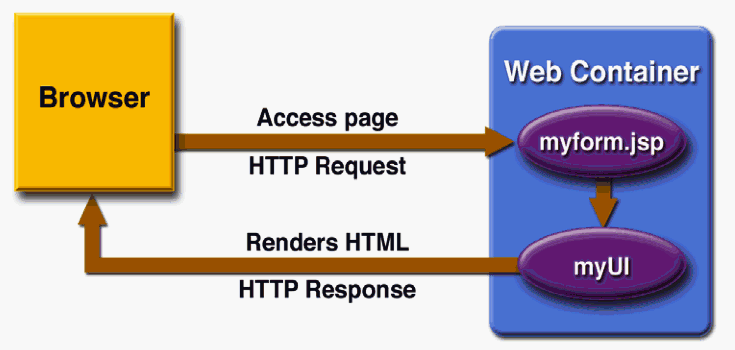
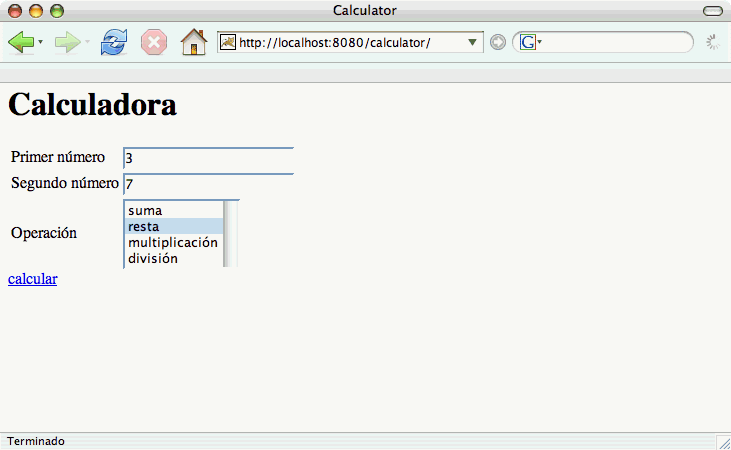
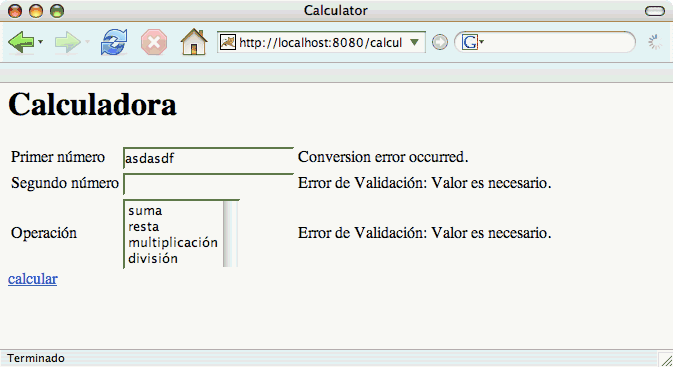
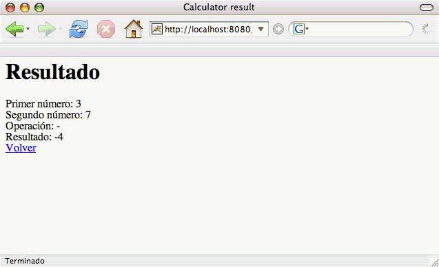
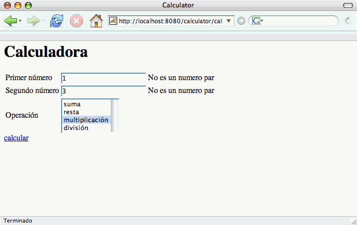
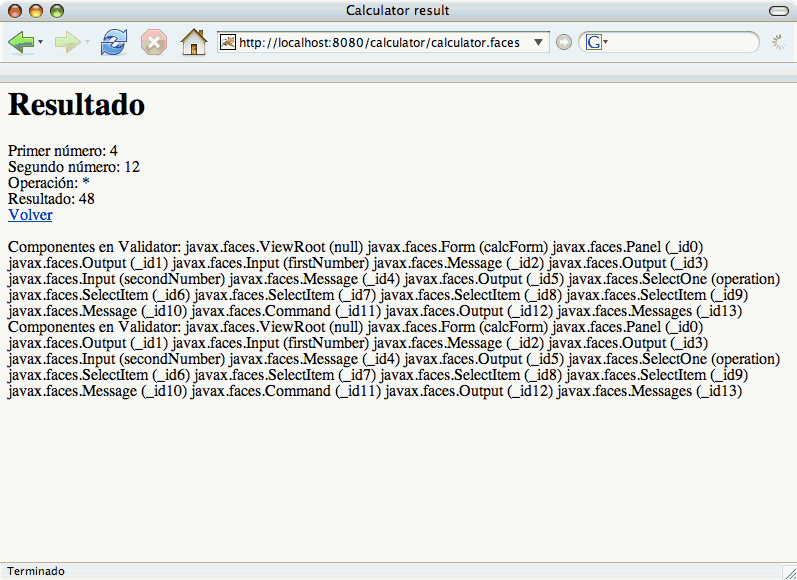
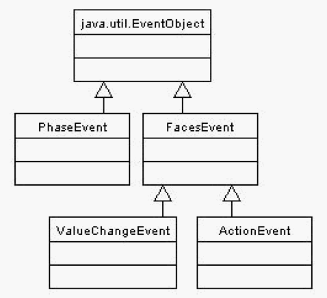
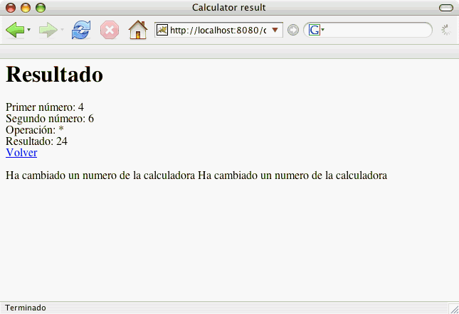
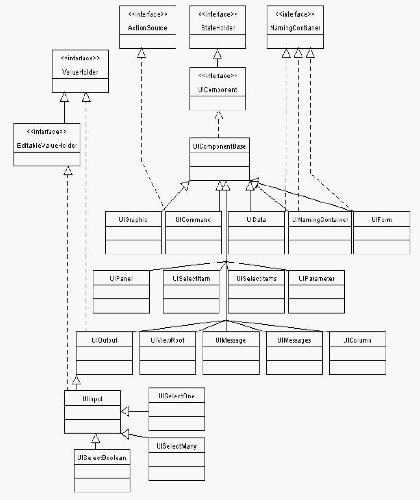
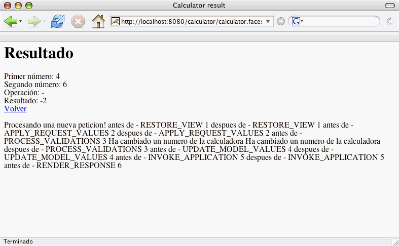

Funcionamiento y arquitectura de JSF
En esta sesión vamos a estudiar en profundidad cómo se gestionan las peticiones a JavaServer Faces, incluyendo detalles de la implementación de esta arquitectura. Veremos un ejemplo completo de una petición JSF, estudiando cómo se realiza, cuál es su ciclo de vida, cómo se validan los datos que el usuario introduce en el componente, cómo obtiene el componente los datos del modelo y cómo se procesan y definen los eventos asociados.
En la sesión anterior tratamos el punto de vista de un desarrollador de páginas web que usa JSF. En esta sesión consideraremos JSF desde el punto de vista de un programador que desea escribir código Java dentro del framework.
Programando en JSF
Tal y como veíamos en la sesión anterior, y definiéndolo de una forma muy simple, JSF es un framework orientado a recoger datos del usuario y pasarlos a la capa del modelo de la aplicación. Todo ello en un entorno Web, con peticiones HTTP y páginas HTML. Los datos se representan internamente en forma de componentes JSF (objetos Java de clases que extienden UIComponentBase). Además, el framework permite definir componentes (botones o enlaces) que representan acciones que pueden ser disparadas por el usuario y comunicadas a la aplicación.
Los datos se introducen y se muestran en forma de texto, y se almacenan en un formato dependiente de la aplicación. Por ejemplo, una fecha se puede representar con un formato dd-mm-aaaa mientras que su representación interna puede ser un objeto de la clase java.util.Date. Para realizar esta conversión entre el texto y el formato interno, se asocian al componente validadores y conversores.
La separación entre la parte visual del componente (código HTML en la página web), el modelo de datos (backing beans) y las acciones (código Java que procesa el modelo y controla la vista) es un esquema tradicional en todos los framework de gestión de interfaces de usuario que se denomina patrón Modelo/Vista/Controlador (MVC).
La aportación fundamental de la tecnología JSF es la adaptación del patrón MVC al entorno web. Para ello, el código final en el que se define un componente es código HTML y los eventos disparados por el usuario se guardan en peticiones HTTP. Un servlet de la clase javax.faces.webapp.FacesServlet es el motor de cualquier aplicación JSF. Este servlet procesa la petición, gestiona todos los componentes relacionados y termina generando el código HTML en el que se traducen estos componentes.
Un concepto muy importante que diferencia JSF de JSP o Struts es que los componentes que constituyen la interfaz de usuario son objetos que residen en el servidor en forma de árbol de objetos. La siguiente figura muestra el proceso típico. Una petición del cliente es procesada por el servidor y, accediendo a la página JSP donde se define el componente, se construye y procesa un árbol de componentes que reside en el servidor. Por último, se renderiza el árbol de componentes, generando la respuesta HTML.

Además del servlet FacesServlet, otros elementos fundamentales de JSF son:
- Etiquetas y páginas JSP con las que se definen los componentes.
- Fichero de configuración faces-config.xml que proporciona una forma declarativa de configurar distintos aspectos de la aplicación JSF, como por ejemplo la relación entre componentes JSF y el modelo de datos en forma de objetos Java de respaldo (backing beans).
Las siguientes URLs son muy útiles cuando se está programando en JSF.
- JavaDoc del API de JSF 1.1: http://java.sun.com/j2ee/javaserverfaces/1.1/docs/api/
- Etiquetas de JSF: http://java.sun.com/j2ee/javaserverfaces/1.1/docs/tlddocs/
- DTD comentada del fichero faces-config.xml: http://horstmann.com/corejsf/faces-config.html
Además, siempre es recomendable tener a mano la especificación original del framework, disponible en la web de los JSR correspondientes.
- JSR 252 (JavaServer Faces 1.2): http://www.jcp.org/en/jsr/detail?id=252
- JSR 127 (JavaServer Faces 1.1): http://www.jcp.org/en/jsr/detail?id=127
Un programa de ejemplo
Como en cualquier otro framework, el ciclo de control de la aplicación no está dirigido por nosotros, sino que es el framework quien lo gestiona. Debido a esto, para programar en JSF debemos incluir nuestro código Java en los manejadores de los distintos eventos que soporta el framework y que se disparan en distintas fases del ciclo vida de la aplicación. Otra forma de programar en JSF es extender el framework para incorporar nuevos componentes definidos por nosotros. En cualquiera de estos casos, es necesario conocer algunos conceptos que veremos a continuación.
Veamos en primer lugar un sencillo programa ejemplo que vamos a utilizar a lo largo de la sesión. Se trata de un programa que implementa una simple calculadora de números enteros.
Definimos dos componentes JSF, uno que recoge los números y la operación del usuario y otro que muestra el resultado.
El siguiente fichero calculator.jsp define un componente JSF llamado "calcForm" que se implementa como un formulario HTML y que contiene un componente panel grid que a su vez contiene dos campos de entrada para que el usuario introduzca los números a operar y un list box para que seleccione una operación. Como último elemento, se define un enlace con la etiqueta <h:commandLink> que define la acción que realiza la operación matemática seleccionada por el usuario.
Se utiliza un único bean de respaldo, llamado calcBean, en el que se han definido las propiedades firstNumber, secondNumber, operation y result.
Fichero calculator.jsp:
<html>
<head> <title>Calculator</title> </head>
<%@ taglib uri="http://java.sun.com/jsf/html" prefix="h" %>
<%@ taglib uri="http://java.sun.com/jsf/core" prefix="f" %>
<link href="app.css" rel="stylesheet" type="text/css">
<h1>Calculadora</h1>
<p>
<f:view>
<h:form id="calcForm">
<h:panelGrid columns="3">
<h:outputLabel value="Primer número"/>
<h:inputText id="firstNumber"
value="#{calcBean.firstNumber}"
required="true"/>
<h:message for="firstNumber"/>
<h:outputLabel value="Segundo número"/>
<h:inputText id="secondNumber"
value="#{calcBean.secondNumber}"
required="true"/>
<h:message for="secondNumber"/>
<h:outputLabel value="Operación"/>
<h:selectOneListbox id="operation"
required="true"
value="#{calcBean.operation}">
<f:selectItem itemValue="+" itemLabel="suma"/>
<f:selectItem itemValue="-" itemLabel="resta"/>
<f:selectItem itemValue="*" itemLabel="multiplicación"/>
<f:selectItem itemValue="/" itemLabel="división"/>
</h:selectOneListbox>
<h:message for="operation"/>
</h:panelGrid>
<h:commandLink action="#{calcBean.doOperation}">
<h:outputText value="calcular"/>
</h:commandLink>
</h:form>
</f:view>
</p>
</body>
</html>
El aspecto de la página HTML generada por este componente es el siguiente:

Como se puede comprobar en el código JSF, se han definido en la tercera columna del panel de la calculadora los mensajes de error JSF asociados a los componentes y que pueden generarse en la conversión o validación de los números introducidos por el usuario. La siguiente figura muestra un ejemplo de página con estos mensajes de error.

El resultado de la operación se muestra con el componente especificado en la siguiente página JSF:
Fichero result.jsp:
<html>
<head> <title>Calculator result</title> </head>
<%@ taglib uri="http://java.sun.com/jsf/html" prefix="h" %>
<%@ taglib uri="http://java.sun.com/jsf/core" prefix="f" %>
<link href="app.css" rel="stylesheet" type="text/css">
<h1>Resultado</h1>
<f:view>
<h:form id="calcResult">
Primer número:
<h:outputText id="firstNumber"
value="#{calcBean.firstNumber}"/> <br />
Segundo número:
<h:outputText id="secondNumber"
value="#{calcBean.secondNumber}"/> <br />
Operación:
<h:outputText id="operation"
value="#{calcBean.operation}"/> <br />
Resultado:
<h:outputText id="result"
value="#{calcBean.result}"/> <br />
<h:commandLink action="OK">
<h:outputText value="Volver"/>
</h:commandLink>
</h:form>
</f:view>
</body>
</html>
Hay que hacer notar que el commandLink "volver" define como acción una cadena. En este caso no se llama a ningún método de acción, sino que cuando se procesa el evento acción se devuelve directamente esa etiqueta y la siguiente página de la aplicación se define por la regla correspondiene del fichero faces-config.xml.
El aspecto de esta página se muestra en la siguiente figura:

El código Java que da soporte a estos componentes se implementa en las clases calculator.model.Calculator y calculator.controller.CalculatorController. El primero define la capa de negocio de la aplicación con los posibles casos de uso y su implementación en código Java.
Fichero calculator.model.Calculator:
package calculator.model;
public class Calculator {
public int add (int a, int b) {
return a+b;
}
public int substract (int a, int b) {
return a-b;
}
public int multiply (int a, int b) {
return a*b;
}
public int divide (int a, int b) {
return a/b;
}
}
La segunda clase, calculator.controller.CalculatorController define el bean de respaldo y el método de acción que realiza la operación matemática seleccionada por el usuario.
Fichero calculator.controller.CalculatorController:
package calculator.controller;
import calculator.model.Calculator;
public class CalculatorController {
private Calculator calculator = new Calculator();
private int firstNumber = 0;
private int secondNumber = 0;
private String operation = "";
private int result = 0;
public CalculatorController() {}
public void setFirstNumber(int firstNumber) {
this.firstNumber = firstNumber;
}
public int getFirstNumber() {
return firstNumber;
}
public void setSecondNumber(int secondNumber) {
this.secondNumber = secondNumber;
}
public int getSecondNumber() {
return secondNumber;
}
public void setOperation(String operation) {
this.operation = operation;
}
public String getOperation() {
return operation;
}
public int getResult() {
return result;
}
public String doOperation() {
if (operation.equals("+"))
result = calculator.add(firstNumber, secondNumber);
else if (operation.equals("-"))
result = calculator.substract(firstNumber, secondNumber);
else if (operation.equals("*"))
result = calculator.multiply(firstNumber, secondNumber);
else if (operation.equals("/"))
result = calculator.divide(firstNumber, secondNumber);
return "OK";
}
}
Por último, el fichero de configuración faces-config.xml relaciona el nombre lógico del bean de respaldo calcBean con la clase calculator.Controller.CalculatorController y le asigna un alcance de sesión.
También se definen en este fichero las reglas de navegación entre las páginas JSP. Tras la página /calculator.jsp se muestra (si el resultado de la acción es "OK") la página /result.jsp. Y tras realizar una acción en la página /result.jsp se muestra (si el resultado de la acción es la cadena OK la página /calculator.jsp).
Fichero faces-config.xml:
<?xml version='1.0' encoding='UTF-8'?>
<!DOCTYPE faces-config PUBLIC
"-//Sun Microsystems, Inc.//DTD JavaServer Faces Config 1.1//EN"
"http://java.sun.com/dtd/web-facesconfig_1_1.dtd">
<faces-config>
<managed-bean>
<managed-bean-name>calcBean</managed-bean-name>
<managed-bean-class>
calculator.controller.CalculatorController
</managed-bean-class>
<managed-bean-scope>session</managed-bean-scope>
</managed-bean>
<navigation-rule>
<from-view-id>/calculator.jsp</from-view-id>
<navigation-case>
<from-outcome>OK</from-outcome>
<to-view-id>/result.jsp</to-view-id>
</navigation-case>
</navigation-rule>
<navigation-rule>
<from-view-id>/result.jsp</from-view-id>
<navigation-case>
<from-outcome>OK</from-outcome>
<to-view-id>/calculator.jsp</to-view-id>
</navigation-case>
</navigation-rule>
</faces-config>
Ya tenemos un sencillo programa ejemplo en JSF. Pero recordemos que en esta sesión queremos comprobar cómo funciona internamente JSF. Necesitamos poder escribir algo de código que se ejecute en algún punto del ciclo de vida del framework. Una solución es el momento de validación de los datos. JSF nos permite definir validadores propios de la aplicación. Lo veremos en el siguiente apartado.
Validación definida en la aplicación
En JSF es posible programar validadores adicionales a los ya existentes en el framework. Estos nuevos validadores definidos deberían ser, en lo posible, reusables para más de un formulario y más de una aplicación. Por ejemplo, podríamos construir un validador que comprobara si una cadena es un código correcto de tarjeta Visa (la implementación de JSF de Apache MyFaces lo hace).
Como ejemplo de implementación de nuevos validadores, vamos a definir un validador que sólo permita introducir números pares en nuestra calculadora. No es un ejemplo realista de validación, pero nos sirve para explicar el funcionamiento del framework.
Los pasos para definir un validador propio son los siguientes:
- Crear una clase que implemente la interfaz javax.faces.validator.Validator e implementar en esa clase el método validate.
- Registrar el validor propio en el fichero faces-config.xml.
- Usar la etiqueta <f:validator/> en las páginas JSP.
He aquí el código que habría que añadir a la aplicación calculator, paso a paso.
-
Implementamos la interfaz Validator.
El primer paso es definir una clase que implemente la interfaz Validator. y el método validate. Para ello creamos el fichero calculator.validator.PairNumberValidator:
package calculator.validator; import javax.faces.application.FacesMessage; import javax.faces.component.UIComponent; import javax.faces.context.FacesContext; import javax.faces.validator.Validator; import javax.faces.validator.ValidatorException; public class PairNumberValidator implements Validator { public void validate(FacesContext arg0, UIComponent component, Object value) throws ValidatorException { int number = ((Integer) value).intValue(); if (number % 2 != 0) { FacesMessage message = new FacesMessage(); message.setDetail("No es un numero par"); message.setSummary("No es un numero par"); message.setSeverity(FacesMessage.SEVERITY_ERROR); throw new ValidatorException(message); } } } }El método validate() recibe el objeto value, que en este caso será la conversión a Integer del valor que ha introducido el usuario en los componentes de entrada de la calculadora.
-
Registramos el validador propio en el fichero faces-config.xml.
Se debe usar el elemento validator.
<validator> <validator-id>calculator.isPair</validator-id> <validator-class> calculator.validator.PairNumberValidator </validator-class> </validator> -
Usamos la etiqueta f:validator en los ficheros JSP.
Añadimos el siguiente código en los dos inputText del fichero calculator.JSP, asociando el validador definido a los dos componentes de entrada.
<h:inputText id="firstNumber" value="#{calcBean.firstNumber}" required="true"> <f:validator validatorId="calculator.isPair"/> </h:inputText>
El resultado se puede comprobar en la siguiente página HTML generada cuando se introducen números impares en la calculadora.

Peticiones JSF
Uno de los conceptos fundamentales para entender el funcionamiento de JSF es el manejo de las peticiones y del contexto asociado a las mismas (FacesContext).
Cada petición procesada por JSF está asociada con un árbol de componentes (llamado también una "vista") que se define en la página JSP con el mismo nombre que la petición. Cuando se realiza una petición de una vista por primera vez se crea el árbol de componentes asociado. Las peticiones siguientes que se hagan sobre la misma vista recuperán el árbol de componentes ya creado y asociado a la petición anteriormente creada.
Veamos un ejemplo con la aplicación anterior calculator. Cuando desde el navegador solicitamos la URI /calculator se accede a la página index.jsp
<html>
<head></head>
<body>
<jsp:forward page="calculator.jsf" />
</body>
</html>
Esta página redirige la petición HTTP al recurso calculator.jsf. Esta petición ya es una petición JSF. Al terminar con el sufijo .jsf es procesada por el servlet javax.faces.webapp.FacesServlet, tal y como está definido en el fichero web.xml:
<!-- Faces Servlet -->
<servlet>
<servlet-name>Faces Servlet</servlet-name>
<servlet-class>javax.faces.webapp.FacesServlet</servlet-class>
<load-on-startup> 1 </load-on-startup>
</servlet>
<!-- Faces Servlet Mapping -->
<servlet-mapping>
<servlet-name>Faces Servlet</servlet-name>
<url-pattern>*.jsf</url-pattern>
</servlet-mapping>
El servlet analiza la URI de la petición (/calculator.jsf/SESION-ID), y decodifica el nombre de la vista a mostrar eliminando el sufijo "jsf" y sustituyéndolo por "jsp". El identificador de la sesión sirve para recuperar la vista asociada a una petición previa de ese mismo recurso y esa misma sesión, en el caso de que ya se hubiera solicitado esa vista previamente. En este caso, sin embargo, se trata de la primera petición que se realiza en la sesión sobre esta vista. JSF construye entonces el árbol de componentes definido por el fichero calculator.jsp y se guarda en el FacesContext asociado a la petición actual.
También es posible generar una petición desde el cliente cuando se pulsa en algún botón generado por una etiqueta <h:commandButton> o se pincha en un enlace resultante de una etiqueta <h:commandLink. En nuestra aplicación esto sucede, por ejemplo, cuando pulsamos en el enlace "calcular" de la página principal de la aplicación. En este caso la vista asociada a la petición que JSF recupera es la propia vista desde la que se realiza la petición, ya que es la que corresponde al formulario que debe ser procesado. En la petición se envían los nuevos valores que el usuario ha modificado y la acción solicitada por el usuario ("calcular"). JSF realiza entonces el procesamiento de la petición que veremos más adelante.
Cada petición tiene asociado un contexto, en forma de una instancia de FacesContext. Este contexto se usa para almacenar los distintos objetos que necesarios para procesar la petición hasta generar el render de la interfaz que se está construyendo. En concreto, gestiona los siguientes aspectos de la petición recibida:
- la cola de mensajes
- el árbol de componentes
- objetos de configuración de la aplicación
- métodos de control del flujo del ciclo de vida
Algunos de los métodos definidos en el objeto FacesContext se listan en la siguiente tabla.
| Método | Descripción |
|---|---|
| addMessage() | Añade un mensaje a la cola de mensajes de la petición. |
| getExternalContext() | Obtiene el contexto externo (normalmente el contexto del servlet FacesServlet) en el que se está procesando la petición. |
| getMessages() | Obtiene un Iterator sobre los mensajes que han sido encolados. |
| getRenderKit() | Obtiene la instancia de RenderKit especificada para el UIViewRoot, si existe. |
| getViewRoot() | Obtiene el UIViewRoot asociado a la petición. |
| renderResponse() | Señala a la implementación de JSF que, tan pronto como la fase actual del procesamiento de la petición se haya completado, se debe pasar el control a la fase Render Response pasando por alto todas las fases que no se hayan ejecutado todavía. |
La cola de mensajes de una petición mantiene un conjunto de mensajes de error que se pueden producir en las distintas fases del ciclo de vida de la misma. El método addMessage se usa para añadir un nuevo mensaje de error en la cola. Es posible usar el método getMessages() sobre el FacesContext para obtener una colección de todos los mensajes de error asociados a una petición. También es posible mostrar todos los mensajes del FacesContext en el propio componente que se está construyendo mediante la etiqueta <h:messages/>.
El método getViewRoot devuelve el componente UIViewRoot asociado a la petición. Este componente es un tipo especial de componente que representa la raíz del árbol.
Vamos a ver un ejemplo de programación con los distintos elementos del FacesContext usando nuestra aplicación calculator.
En primer lugar, para poder trabajar con el FacesContext hay que obtener la instancia asociada a la petición actual. Para ello basta con llamar al método estático getCurrentInstance() de la clase FacesContext:
import javax.faces.context.FacesContext; ... FacesContext context = FacesContext.getCurrentInstance(); ...
Podemos hacer esta llamada en el método validate() de un Validator, en el método decode() de un Renderer, en un manejador de una acción o en cualquier otro punto en el que escribamos código que extiende el framework. Una vez obtenido el FacesContext asociado a la petición actual es posible acceder a sus elementos.
Vamos a modificar el método validate que hemos implementado anteriormente para acceder al FacesContext y a uno de sus elementos más importantes: el árbol de componetes. El siguiente código consigue esto.
package calculator.validator;
...
import javax.faces.component.UIComponentBase;
import javax.faces.component.UIViewRoot;
import javax.faces.context.FacesContext;
public class PairNumberValidator implements Validator {
public void validate(FacesContext arg0,
UIComponent component,
Object value)
throws ValidatorException {
FacesContext context = FacesContext.getCurrentInstance();
UIViewRoot viewRoot = context.getViewRoot();
String ids = getComponentIds(viewRoot);
FacesMessage message = new FacesMessage("Componentes: "+ ids);
context.addMessage(null,message);
...
}
}
// Obtiene los identificadores y tipos de un componente y de sus hijos.
// Se llama a si misma de forma recursiva
private String getComponentIds(UIComponentBase component) {
String ids = "";
ids += component.getFamily() + " (" + component.getId() + ") ";
Iterator it = component.getFacetsAndChildren();
while (it.hasNext()) {
UIComponentBase childComponent = (UIComponentBase) it.next();
ids += getComponentIds(childComponent);
}
return ids;
}
}
Una vez obtenido el FacesContext, lo usamos para conseguir el UIViewRoot de la petición, el componente raíz del árbol de componentes asociado a la petición JSF. Una vez obtenido, llamamos al método getComponentIds(), un método que está implementado más adelante que recorre recursivamente el árbol de componentes y devuelve una cadena con todos los tipos de componente y su identificador.
En el método getComponentIds() se llama a getFacetsAndChildren, un método del componente que devuelve un iterador con los hijos inmediatos y los Facets asociados.
Una vez obtenida la cadena con los tipos e identificadores de los componentes, se añade en la cola de mensajes del contexto de la petición con el método addMessage(). Estos mensajes podemos mostrarlos con la etiqueta <h:messages/> en la página result.jsp.
<html>
<head> <title>Calculator result</title> </head>
<%@ taglib uri="http://java.sun.com/jsf/html" prefix="h" %>
<%@ taglib uri="http://java.sun.com/jsf/core" prefix="f" %>
<link href="app.css" rel="stylesheet" type="text/css">
<h1>Resultado</h1>
<p>
<f:view>
<h:form id="calcResult">
...
<h:messages/>
</h:form>
</f:view>
</p>
</body>
</html>
La siguiente imagen muestra lo que aparece en pantalla. Hay que notar que esta pantalla sólo aparece cuando introducimos un error en la validación de uno de los números. También hay que notar que el mensaje con la lista de componentes aparece repetido, al procesarse dos veces el método validate.

Eventos en JSF
En JSF se definen dos tipos de eventos que un usuario puede realizar: eventos producidos por el cambio de valor de un componente con datos introducidos por el usuario y eventos producidos un botón (etiqueta <h:commandButton>) o un enlace (etiqueta <h:commandLink>).
El usuario interactúa con un formulario, cambiando algunos de sus valores, y luego pulsa en un botón o un enlace JSF para que se procese la petición con la vista actual. Los cambios de los valores en el formulario quedan guardados como eventos ValueChangeEvent asociados a esos componentes y son procesados en algún momento del ciclo de vida de la petición. Si el botón o el enlace pulsado por el usuario tienen un atributo action, se guarda en el componente un evento de tipo ActionEvent. El valor del atributo action representa el método de la aplicación que responderá al evento. En una petición habrá como máximo un evento de tipo ActionEvent (aunque puede no haber ninguno) y un número variable de eventos ValueChangeEvent.
La siguiente figura representa la jerarquía de clases e interfaces que define JSF para los eventos. Además de los eventos ValueChangeEvent y ActionEvent existe en JSF el evento PhaseEvent que tiene que ver con el ciclo de vida del procesamiento de la petición y se genera cuando se cambia de fase.

Es muy sencillo definir un manejador de eventos de cambio de valor para un componente. Basta con definir una clase que implemente la interfaz ValueChangeListener y asociar esa clase con el componente usando la etiqueta JSP <f:valueChangeListener type="nombre de la clase"/>.
El siguiente ejemplo muestra cómo modificar el fichero calculator.jsp para incluir el manejador del evento de cambio de valor en los componentes de tipo entrada.
<html>
<head> <title>Calculator</title> </head>
<%@ taglib uri="http://java.sun.com/jsf/html" prefix="h" %>
<%@ taglib uri="http://java.sun.com/jsf/core" prefix="f" %>
<link href="app.css" rel="stylesheet" type="text/css">
<h1>Calculadora</h1>
<p>
<f:view>
<h:form id="calcForm">
...
<h:inputText id="firstNumber"
value="#{calcBean.firstNumber}"
required="true">
<f:validator validatorId="calculator.isPair"/>
<f:valueChangeListener
type="calculator.controller.NumberChangeListener"/>
</h:inputText>
...
</h:form>
</f:view>
</p>
</body>
</html>
Definimos también la clase calculator.controller.NumberChangeListener con la siguiente implementación.
package calculator.controller;
import javax.faces.application.FacesMessage;
import javax.faces.context.FacesContext;
import javax.faces.event.AbortProcessingException;
import javax.faces.event.ValueChangeEvent;
import javax.faces.event.ValueChangeListener;
public class NumberChangeListener implements ValueChangeListener {
public void processValueChange(ValueChangeEvent arg0)
throws AbortProcessingException {
FacesContext context = FacesContext.getCurrentInstance();
FacesMessage message =
new FacesMessage("Ha cambiado un numero de la calculadora");
context.addMessage(null,message);
}
}
Como se puede comprobar en el código, lo que hace el manejador del evento es añadir un mensaje a la cola de mensajes de la petición. De la misma forma que hemos hecho antes podemos mostrar el mensaje añadiendo la etiqueta h:messages en la vista resultante de la petición.

Componentes JSF
En JSP y Struts no existe el concepto de componente, entendido éste como un objeto Java, sino que las etiquetas JSP se traducen directamente a código HTML en un proceso que se encarga además de obtener los datos de los beans de respaldo y de incorporarlos al código HTML generado.
Los componentes JSF, al contrario, son objetos Java que se construyen a partir de las etiquetas JSF. El framework JSF maneja su ciclo de vida y, como parte final, llama a un método de render que produce el código de salida del componente. En la especificación actual de JSF (1.1), este código es HTML, pero el framework está pensado para soportar otros kits de render.
Todos los componentes JSF extienden la clase abstracta javax.faces.component.UIComponentBase, que proporciona la implementación por defecto de los métodos soportados por los componentes JSF.
Cada componente JSF contiene:
- Una lista de componentes hijos.
- Una tabla hash de atributos.
- Uno o más validadores.
- Uno o más manejadores de eventos.
- Un identificador para un renderer opcional.
Todos los componentes JSF son potencialmente contenedores de otros componentes. De esta forma es posible construir componentes compuestos, una característica compartida por la mayoría de frameworks de interfaces de usuario como Swing o Smalltalk.
Los componentes JSF mantienen una lista de atributos almacenados en una tabla hash e indexados por el nombre del atributo. Como valor del atributo es posible insertar cualquier objeto, como una dirección URL, un entero o una imagen.
Todos los componentes realizan tres tareas fundamentales:
- Renderizar el componente, normalmente generando código HTML.
- Manejar los eventos del componente.
- Validar los valores del componente.
Los componentes JSF pueden renderizarse ellos mismos o delegar el renderizado a un renderer. El método booleano UIComponent.rendersSelf() dice a la implementación JSF si un componente se renderiza a si mismo o no. Si no, la implementación JSF obtiene una referencia al renderer del componente con la llamada UIComponent.getRendererType() y después llama al renderer para producir el código HTML del componente.
La gestión de eventos del componente puede también manejarse directamente por un componente o se puede delegar en un manejador de eventos. Se pueden registrar uno o más manejadores de eventos para un componente en la fase Apply Request Values del ciclo de vida del componente. Los manejadores son registrados por el renderer del componente o por el componente mismo.
Por último, los componentes JSF pueden tener uno o más validadores que validan la entrada. Estos validadores, habitualmente creados por la implementación JSF, se almancenan por componentes en un array list.
Otro concepto importante en JSF es el concepto de vista (view). Cuando el framework recibe una petición, se construye una vista con los componentes relacionados con la petición. Una vista es un árbol de componentes, cuya raíz debe ser una instancia de UIViewRoot, una clase que no tiene rendering y que sólo sirve como raíz del árbol de componentes. Los componentes en el árbol pueden ser anónimos o pueden tener un identificador de componente proporcionado por el usuario del framework. Los componentes en el árbol pueden ser localizados en base a estos identificadores de componentes, que deben ser únicos en el espacio de nombres definido por los componentes hijos del antecesor más cercano que sea un NamingContainer.
La especificación de un componente JSF utiliza las siguientes interfaces definidas en la especificación JSF:
| Interfaz | Descripción | ||
|---|---|---|---|
| ActionSource | ActionSource es una interfaz que debe ser implementada por cualquier UIcomponent que desee ser una fuente de ActionEvents, incluyendo la habilidad de invocar las acciones de la aplicación mediante el uso del ActionListener por defecto. | ||
| EditableValueHolder | La interfaz EditableValueHolder extiende ValueHolder para describir características adicionales de los componentes editables, incluyendo ValueChangeEvents y Validators. | ||
| NamingContainer | NamingContainer es una interfaz que debe ser implementada por cualquier UIComponent que quiera definir un espacio de nombres de identificadores. | ||
| StateHolder | Esta interfaz es implementada por componentes que necesitan salvar su estado entre peticiones. | ||
| ValueHolder | ValueHolder es una interfaz que debe ser implementada por cualquier UIComponent que desee soportar un valor local y acceder a los datos en la capa de modelo y soportar la conversión entre String y el tipo de datos nativo del modelo. | ||
Tipos de componentes estándar de JSF
En JSF se definen un número de componentes estándar que implementan las interfaces definidas en el punto anterior. Cada clase está asociada normalmente a una etiqueta JSP y se renderiza en código HTML.
Hay que notar que en JSF los componentes se definen en base a su función, no a su aspecto. El aspecto se modifica mediante el render asociado al componente. Así, por ejemplo, un campo de entrada de texto y un campo de entrada de contraseñas se representan por el mismo tipo de componente JSF pero tienen distintos Renders asociados.
| Componente | Descripción | ||
|---|---|---|---|
| UIColumn | UIColumn representa una columna en el componente padre UIData. Los componentes hijos de UIColumn se procesan una vez por cada fila en el componente padre UIData | ||
| UICommand | UICommand repesenta componentes de interfaz como botones, enlaces e items de menú que producen acciones o eventos que serán tratados por la aplicación. Estos componentes emiten un ActionEvent cuando se disparan que debe ser procesado por un ActionListener registrado. | ||
| UIData | UIData representa una colección de datos envuelta por una instancia DataModel. Este componente se usa para mostrar tablas, listas y árboles. | ||
| UIForm | UIForm representa un input del usuario y se usa como contenedor de otros componentes. | ||
| UIGraphic | UIGraphic muestra una imagen no modificable. | ||
| UIInput | UIInput representa componentes de interfaz como campos de entrada de texto, campos de entrada numéricos o campos de entrada de fechas. Un UIInput muestra el valor actual de un campo y acepta cambios del usuario. Cada cambio dispara un evento ValueChangedEvent que debe ser procesado con un ValueChangedListener registrado. También suelen registrarse en este tipo de componente Validators y Converters que validan y convierten el formato de los datos introducidos por el usuario. | ||
| UIMessage | UIMessage muestra mensajes de error asociados a un componente de entrada específico | ||
| UIOutput | UIOutput se usa para componentes de interfaz como etiquetas, mensajes de error o cualquier otro dato que no es modificable. | ||
| UIPanel | UIPanel se usa para componentes de interfaz que sirven como contenedores de otros sin requerir el envío de forms. Estos componentes se usan principalmente para manegar la disposición de sus componentes hijos. | ||
| UIParameter | UIParameter representa información que no requiere ser renderizada. Se usa principalmente para proporcionar información adicional a un componente padre. Por ejemplo, se puede usar para declarar un parámetros de una petición asociada a un enlace (componente UICommand). | ||
| UISelectBoolean | UISelectBoolean representa un campo de datos Boolean. Se suele renderizar como un check box. Este componente extiende a UIInput, por lo que emite un ValueChangedEvent cuando un usuario lo cambia de valor. | ||
| UISelectItem | UISelectItem representa una única selección en una lista de selección. Puede usarse para insertar un intem en un UISelectMany o en una lista UISelectOne | ||
| UISelectItems | UISelectItems es muy similar a UISelectItem con la excepción de que permite la inserción de múltiples items de una vez. | ||
| UISelectMany | UISelectMany representa componentes de interfaz como combo boxes, list boxes, grupos de check boxes y similares. Este componente permite la selección de múltiples items. Cada item se especifica por un o más UISelectItem o UISelectItems. Este componente extiende UIInput, por lo que emite un evento ValueChangedEvent cuando un usuario modifica la lista de items seleccionados. | ||
| UISelectOne | UISelectOne es muy similar a UISelectMany con la excepción de que sólo permite la selección de un item. | ||
| UIViewRoot | UIViewRoot representa la raíz del árbol de componentes e interviene en el proces de guardar el estado de todos los componentes del árbol. Este componente no se renderiza. | ||
La jerarquía de clases se muestra en la siguiente figura. En ella aparecen también las interfaces implementadas por cada una de las clases.

El ciclo de vida de una petición JSF
Uno de los aspectos centrales del funcionamiento de JSF es el ciclo de vida por el que pasa un componente, desde que se realiza una petición hasta que se genera el código HTML en el que se renderiza el componente resultante. Aunque existen otros escenarios posibles, vamos a ver el escenario más completo y más usual, en el que el servlet controlador de JSF, FacesServlet, recibe una petición desde una vista previamente creada. Esta vista tiene un identificador que le sirve a JSF para localizar el árbol de componentes asociado. Una vez localizado, la implementación de JSF aplicará las siguientes fases al componente (ver figura):

- Restaurar la vista (restore view)
- Aplicar los valores de la petición (apply request values)
- Procesar las validaciones (process validations)
- Actualizar los valores del modelo (update model values)
- Invocar a la aplicación (invoke application)
- Renderizar la respuesta (render response)
Tal y como se ve en la figura, al terminar cada una de las fases se procesan los eventos generados en la misma y es posible que se salte directamente a la fase de renderizar la respuesta y no se realicen el resto de fases o que se termine el procesamiento.
Es interasante comprobar directamente la evolución del ciclo de vida de una petición. El siguiente ejemplo muestra cómo hacerlo.
JSF emite un evento PhaseListener al comienzo y al final de cada fase del ciclo de vida de la petición. La siguiente clase para nuestro ejemplo calculator implementa la interfaz PhaseListener que declara dos métodos para procesar esos eventos: beforePhase y afterPhase. En el ejemplo se crea un mensaje con el texto indicando en qué fase se encuentra la aplicación y se añade en la cola de mensajes.
package calculator.controller;
import javax.faces.application.FacesMessage;
import javax.faces.context.FacesContext;
import javax.faces.event.PhaseEvent;
import javax.faces.event.PhaseId;
import javax.faces.event.PhaseListener;
public class CalculatorPhaseListener implements PhaseListener {
public void beforePhase(PhaseEvent pe) {
FacesContext context = FacesContext.getCurrentInstance();
if (pe.getPhaseId() == PhaseId.RESTORE_VIEW)
context.addMessage(
null,
new FacesMessage("Procesando una nueva peticion!"));
context.addMessage(
null,
new FacesMessage("antes de - " + pe.getPhaseId().toString()));
}
public void afterPhase(PhaseEvent pe) {
FacesContext context = FacesContext.getCurrentInstance();
context.addMessage(
null,
new FacesMessage("despues de - " + pe.getPhaseId().toString()));
if (pe.getPhaseId() == PhaseId.RENDER_RESPONSE)
context.addMessage(
null,
new FacesMessage("Peticion terminada!"));
}
public PhaseId getPhaseId() {
return PhaseId.ANY_PHASE;
}
}
Para que el framework llame a este manejador hay que añadir en el fichero faces-config.xml la siguiente declaración:
<lifecycle>
<phase-listener>
calculator.controller.CalculatorPhaseListener
</phase-listener>
</lifecycle>
Se pueden ver los mensajes con la etiqueta h:messages en cualquier vista. Por ejemplo, en la vista con el resultado de la operación aparece la siguiente pantalla.

Tal y como se muestra en la ilustración con el ciclo de vida de la petición, es posible en cualquier momento saltarse el restro de fases. En algunos casos incluso es útil saltarse todas las fases (esto es, salir después de "Apply Request Values"). Por ejemplo, en la acción de un botón "Cancel" se debe salir inmendiatamente de la página sin realizar la validación de componentes. Para conseguir esto basta con poner a "true" el campo "inmediate" del componente h:commandButton:
<h:commandButton id="cancelButton"
...
value="Cancel"
inmediate="true"
action="viewInvoices"/>
Vamos a describir a continuación cada una de las fases del ciclo de vida de una petición.
Restaurar la vista (Restore View)
En la primera fase del ciclo de vida de una petición, ésta llega al controlador FacesServlet. El controlador examina la petición y obtiene el identificador de la vista, definido por el nombre del recurso (URI) que se solicita. Si existe un árbol de componentes cuyo identificador se corresponde con el solicitado, JSF recupera su estado previo y lo usa como árbol actual. Si no existe ese árbol se construye uno a partir de la página solicitada, registrándose en él los manejadores de eventos y los validadores asociados a los distintos componentes.
Al final de la fase, el árbol de componentes se pasa al FacesContext mediante el método setViewRoot(), que guardará el estado previo o el estado por defecto del árbol de componentes. Si la petición no contiene ningún dato POST ni parámetros de petición (la página se ha cargado accediendo directamente a su URL), se llama al método renderResponse() del FacesContext de forma que se saltan el resto de fases del ciclo de vida y el árbol se renderiza en la fase Render Response. En el caso contrario, en el que la petición contiene parámetros y argumentos, se trata de una petición originada en un comando (botón o enlace) y hay que procesar el árbol de componentes y la petición en las siguientes fases.
Como una última aclaración, hay que hacer notar que el nombre de la fase puede dar lugar a cierta confusión. Cuando se habla de restauar la vista, la especificación de JSF se refiere a recuperar el árbol de componentes (objetos Java) asociado a la página JSP actual (que puede ser el formulario que el usuario acaba de rellenar). Al contrario de lo que podría parecer por el nombre de la fase, no se trabaja todavía con la representación HTML del árbol de componentes, esto se hace en la última fase del ciclo.
Aplicar los valores de la petición (Apply Request Values)
El propósito de esta fase es actualizar todos los componentes del árbol de componentes con los valores de la petición. La implementación de JSF consigue esto llamando al método processDecodes() del componente raíz del árbol de componentes (instancia de UIViewRoot). Esta llamada resulta en una llamada recursiva al mismo método de cada componente hijo. El método processDecodes() procesa cada uno de los argumentos de la petición, convirtiendo el valor String introducido por el usuario en los tipos apropiados del bean de respaldo. Además, se realizan las siguientes acciones especiales
- Si se trata de un componente de tipo UICommand (correspondiente a un botón o un enlace) y se comprueba que ha sido activado, se encola un ActionEvent que será procesado posteriormente en la fase Invoke Application. Si el componente tiene una propiedad inmediate definida como true, se realiza el procesamiento del evento al final de esta fase en lugar de en la fase Invoke Application.
- Si se trata de un componente que contiene un valor (como UIInput), y que tiene una propiedad inmediate definida como true, se realiza en esta fase la conversión y validación (incluyendo el eventual disparo de eventos ValueChangeEvent) en lugar de en la fase Process Validation.
Al final de la fase, todos los componentes con valores editables habrán sido actualizados con los nuevos valores entregados en la petición. Además, se habrá realizado la conversión y la validación de aquellos componentes con la propiedad inmediate definida a true. Las conversiones y validaciones que hayan fallado habrán encolado mensajes mediante el método addMessage(), y la propiedad valid del componente correspondiente se habrá definido como false.
Si algún manejador o validador llama al método responseComplete() del FacesContext, el procesamiento de la petición actual termina inmediatamente. Si se llama al método renderResponse(), el control se transfiere a la fase Render Response del ciclo de vida. En otro caso el control se transfiere a la siguiente fase.
Procesar las validaciones (Process Validations)
Durante esta fase del ciclo de vida de la petición, JSF llamará al método processValidators() del UIViewRoot del árbol de componentes. Esto producirá una llamada recursiva al mismo método de todos los componentes del árbol. Es posible que algunos componentes ya hayan realizado la validación en la fase anterior.
Durante el procesamiento de las validaciones en el método processValidators() se encolan todos los posibles eventos de cambio de valor asociados a los componentes y al final de la fase se emiten (broadcast) a los manejadores registrados.
Una vez terminada la fase, todas las conversiones y las validaciones se habrán completado. Las conversiones y validaciones que hayan fallado habrán encolado mensajes en el FacesContext de la petición actual y la propiedad valid en el componente correspondiente se habrá convertido en false.
Al igual que en la fase anterior, los conversores, validadores y manejadores de eventos pueden hacer que el ciclo de vida termine llamando al método responseComplete() o que se pase directamente a la fase de renderizado de la vista con el método renderResponse(). Si no se llama a ninguno de estos métodos, el ciclo de vida continua.
Actualizar los valores del modelo (Update Model Values)
Si se alcanza la fase de actualización de los valores del modelo, se supone que la petición recibida es correcta sintactica y semánticamente, que todos los valores locales del árbol de componentes han sido actualizados y que es el momento de actualizar los datos del modelo de la aplicación, en preparación de la ejecución de los eventos de aplicación que hayan sido encolados.
Durante esta fase se llama al método processUpdates() de los componentes del árbol de la petición y en estas llamadas se realizan las actualizaciones de las propiedades asociadas en los beans de respaldo. En estas llamadas se pueden producir nuevos errores y nuevos eventos. Los errores producen mensajes que se almacenan en el FacesContext. Los eventos se almacenan y se ejecutan al final de las actualizaciones.
Al igual que en las fases anteriores, se puede terminar el procesamiento de la petición con una llamada a responseComplete() o a la fase de renderizado del árbol de componentes con una llamada a renderResponse().
Al final de la fase, todos los beans de respaldo se habrán actualizado convenientemente.
Invocar a la aplicación (Invoke Application)
El propósito de esta fase es procesar cualquier ActionEvent que haya sido previamente encolado por algún componente UICommand. Para ello, JSF llama al método processApplication() del componente UIViewRoot.
La implementación JSF define un manejador de eventos ActionEvent por defecto. Este manejador de eventos implementa la navegación entre páginas, procesando el ActionEvent para obtener el método de acción e invocándolo. Este método de acción (el método calcBean.doOperation() en nuestro ejemplo) no debe tener argumentos y debe obtener devolver una cadena.
Una vez invocado el método de acción, JSF pasa la cadena devuelta al NavigationHandler, que busca en el fichero de configuración de JSF (el fichero faces-config.xml) alguna regla de navegación que empareje con la vista actual y la cadena devuelta. Si se encuentra esta regla JSF llama a setViewRoot() con el nombre de la nueva vista y se construye un nuevo árbol de componentes. Si no se encuentra ninguna regla, se mantiene la vista actual.
Al final de esta fase se pasa el control a la fase Render Response en la que se genera la vista actual.
Renderizado de la respuesta (Render Response)
El propósito de la fase de renderizado de la respuesta es construir la interfaz de usuario correspondiente al árbol de componentes actual que se devuelve como respuesta de la petición. En concreto, se obtiene la representación HTML de los componetes del árbol y de sus valores.
Una vez creada la vista, se salva su estado para ser usado por futuras peticiones.